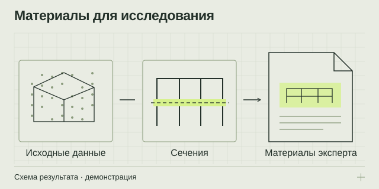

НАПРАВЛЕНИЕ 05 / СОБСТВЕННИКАМ, ЮРИСТАМ И ЭКСПЕРТНЫМ КОМАНДАМ
Цифровые материалы для строительной экспертизы
Свяжите вопрос исследования с проверяемыми данными: измерениями, обмерами, сечениями и иллюстрациями, которые может использовать ответственный эксперт.
Измерительная основа + материалы исследования
Состав и формат определяются задачей эксперта

Из задачи — в проверяемый результат
Строительный спор часто начинается с общего несогласия, а исследованию нужны конкретные вопросы и подходящие методы. Цифровая геометрия может помочь зафиксировать доступные размеры, положение конструкций и расхождения с проектом. Но измерительные материалы сами по себе не являются ответом на все экспертные вопросы. Программу исследования и необходимость дополнительных методов определяет специалист в пределах своей компетенции.
Три разных результата, которые важно различать
Измерительные материалы описывают полученные данные и условия их получения. Внесудебное исследование выполняется для согласованной задачи заказчика. Судебная экспертиза является процессуальным действием и проводится на соответствующем основании. Покупка услуги или название сайта не создают судебный статус документа.
Если экспертиза уже назначена, исходной точкой служат поставленные вопросы и процессуальные документы. Если спор ещё обсуждается, можно начать с разбора задачи и определения того, какие данные действительно нужны.
Как строится работа с задачей
- Уточняются вопросы. Что требуется установить, какие документы доступны и для чего нужен результат.
- Определяется программа. Специалист выбирает методы, зоны и дополнительные исследования.
- Формируется измерительная основа. Данные собираются и проверяются в согласованном объёме.
- Готовятся материалы. Создаются обмеры, сравнения, сечения и иллюстрации с пояснениями.
- Оформляется исследование. Эксперт самостоятельно оценивает данные и формулирует выводы в рамках согласованных оснований.
Что можно включить в состав выдачи
- Облако точек и обмеры доступной геометрии объекта.
- Сопоставления с проектом, контрольные сечения и таблицы измеренных расхождений.
- Иллюстрации, позволяющие соотнести выводы исследования с участками объекта.
- Описание метода и ограничений: исходные данные, контроль качества, недоступные зоны.
Заключение и иные документы включаются в предложение отдельно с указанием исполнителя, вопросов и назначения исследования. Состав не следует выбирать только по названию готового пакета.
Что подготовить для первого обсуждения
Кратко опишите объект, суть ситуации и вопрос, на который хотите получить обоснованный ответ. Укажите город, наличие доступа, стадию спора и желаемый срок. Перечислите проект, договоры, акты, фотографии, предыдущие заключения и другие имеющиеся материалы.
Не требуется сразу пересылать весь архив. Сначала можно составить перечень документов и уточнить у партнёра, что необходимо для оценки задачи. Передачу материалов дела и конфиденциальных файлов нужно согласовать с ответственным исполнителем.
Как обсуждаются стоимость и сроки
Расчёт зависит от количества и сложности вопросов, объёма документации, доступа к объекту, измерений, дополнительных методов и состава оформляемых материалов. Может потребоваться разделение задачи между несколькими специалистами.
В предложении следует закрепить исполнителя, границы работ, исходные данные, результат и порядок взаимодействия. Экспертный вывод нельзя заранее обещать в пользу какой-либо стороны; оплата исследования не должна определять его содержание.
Ответы перед заказом
Можно начать до обращения в суд?
Можно обсудить задачу и возможный состав внесудебного исследования. Его назначение, вопросы и формат определяются отдельно; это не равнозначно назначенной судом экспертизе.
Достаточно ли одного сканирования?
Не всегда. Прочность, причины дефектов, скрытые повреждения и другие обстоятельства могут требовать дополнительных методов. Программу определяет специалист под конкретный вопрос.
К кому обратиться по экспертной части?
На сайте приведены официальные контакты экспертного партнёра АНО «МСК-Эксперт». В обращении укажите задачу и нужный вид результата; окончательный исполнитель и условия закрепляются в предложении и договоре.
Подготовьте вводные без лишней переписки
Откройте памятку: она помогает описать объект, собрать исходные данные и выбрать нужный результат.
Что подготовить для расчёта ↗Официальные разъяснения
Для разграничения измерительных материалов и судебной экспертизы:
ОТ ЗАДАЧИ К СОСТАВУ РАБОТ
Обсудим ваш объект
Подготовьте город, тип и примерную площадь объекта, цель работ и имеющиеся документы. В брифе можно собрать вводные и открыть письмо экспертному партнёру.
Экспертный партнёр — АНО «МСК-Эксперт»: +7 495 648-50-91 · официальный сайт и форма обращения ↗. При нажатии на почтовую ссылку откроется ваша программа: письмо отправляете вы.